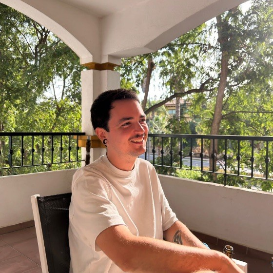
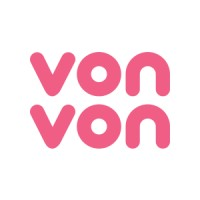

NUNO BALBONA PÉREZ
FULL-STACK DEVELOPER

Full-stack developer with +10 years of experience in UI/UX, Backend, CI/CD, and System administration.EXPERIENCE
-
Senior Full-Stack Developer at iDoctus M3 Inc.
[May 2024 ‑ Present]
- Led the refactor of the iOS app from Objective-C to Swift, significantly enhancing code maintainability and app reliability
- Built internal tooling to streamline development and deployment, including automated native app deployments, a CLI for icon generation, server deployment scripts, and GitHub CI pipelines
- Supported the team through domain challenges by gaining deep familiarity with business requirements and contributing across the stack, from the Android app to backend services
-
Freelance Developer
[2023 ‑ May 2024]
- Developed MVPs for varied business ideas
- Did some additional freelance work
-
CTO at Widitrade
[2022 ‑ 2023]
- Led full-stack team of 3 developers: assigning tasks, solving questions and issues, and monthly 1:1s; with a global understanding of the company and it’s needs
- Managed hiring processes
- Filled various roles depending on the company needs like contributing code, maintaining and deploying infrastructure, code reviewing…
-
Full-Stack Developer at Widitrade
[2020 ‑ 2022]
- Maintained legacy ecommerce platform, which sells millions of euros monthly, using Symfony
- Developed a new platform from the ground up using Laravel and Vue.js
- Eventually promoted to CTO
-
Freelance Developer
[2020 ‑ 2020]
- Developed multiple MVPs for varied business ideas.
- Developed new CuriousCat webapp and native apps (+4.5 stars) iOS App, Android App
-
Full-Stack Developer at vonvon inc.

[2018 ‑ 2020]
- Developed new features for CuriousCat, and kept an availability of +99.9%
- Developed multiple systems using nodejs microservices to improve CuriousCat's safety, like blocking questions from bad agents, moderation for images/reports, and more.
- Helped increase ad revenue by working with different partners and running experiments.
- Developed multiple other social websites/apps.
-
Technical Cofounder at CuriousCat
[2016 ‑ 2018]
- Maintained, as a single developer, a stable backend that handled +40k concurrent users, and many millions of posts per month.
- Developed MVP with PHP + JQuery, and migrated to a Single Page Application using Vue.js as the webapp got more complex.
- Ran experiments to drive user retention and acquisition.
-
Web Developer at Webmonster
[2014 ‑ 2017]
- Developed company websites and webapps for multiple multinationals and local companies like Danone/Dannon, and Interporc.
- I developed sites from scratch, and improved existing websites using PHP, Wordpress, jQuery, and Vue.js
- Customer support, answering tickets and fixing issues with the client's websites + emails.
SKILLS
- Programming Languages: Solid knowledge of: Typescript, PHP, Java, Kotlin, Swift, Objective-C; but I'm up to the challenge of learning any new ones.
- Frontend: Vue, React, Solid.js, React Native, Vite, Tailwind
- Backend: Docker, AWS, Linux, MySQL, Postgres, MongoDB, Redis, Memcached, Laravel, Symfony, Nest.js, GraphQL
- Languages: Professional English, Native Spanish and Galician
- Personal skills: I have a strong work ethic. I like to build things well, but can also recognize if I need to move fast. I'm independent and resourceful, but also love to work in teams, knowing when to ask for help or help others.
EDUCATION
I started programming at age 11, and taught myself how to code by developing tools and games. I pursued a CS degree for a couple of years, but dropped out to focus on work.
PORTFOLIO
-
CuriousCat
- CuriousCat was a Q&A social network used by more than one and a half million people every day, where you can ask and receive questions, sometimes anonymously.
- I cofounded CuriousCat in 2016, and we were acquired by Vonvon Inc two years after.
- Scaling was one of the main challenges, as we sometimes reached +40k concurrent users. It used to serve +2B requests per month.
-
Brawlmance
- Website that provides statistics for the videogame Brawlhalla, it crawls millions of players every day, and keeps track of the global trends
- It has mantained a small but steady user base of about ~5k monthly users for many years, coming from recurring users and SEO
- Is-on-water: An API for determining if a point on earth is on water (ocean, river, or lake), or land. Developed thanks to the ASTWBD v001 dataset
- Worldex: Geoguessr-inspired geo-guessing race game, where you have to find your way to the finish line as fast as you can, from an unknown urban location. Supports multiplayer lobbies using a Node.js server and websockets
- ManifoldTradingBot: Trading bot developed in Go that consistently traded on a prediction market platform within the top 10% of bots
- Conway Engine: A performant JS engine for Conway's Game of Life
- Scrambled Words (mobile only): Endless Scrabble word game
- Palabrio: Wordle clone built with Typescript and Svelte
- sync-contributions-calendar: Merge your GitLab's contributions to your GitHub contributions calendar
- vue-i18n-scanner: vue-18n-scanner analyses your Vue.js source code in order to report unused keys, missing translations, and update your translation files
- twitch-drops-lurker: Get twitch drops without the hassle of having a tab open